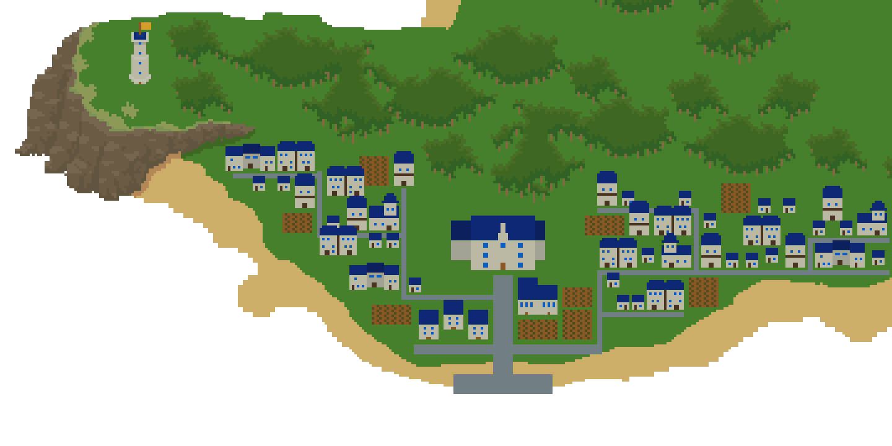
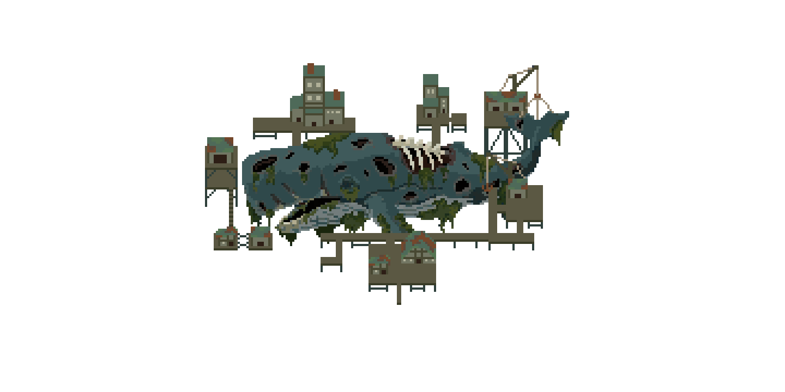
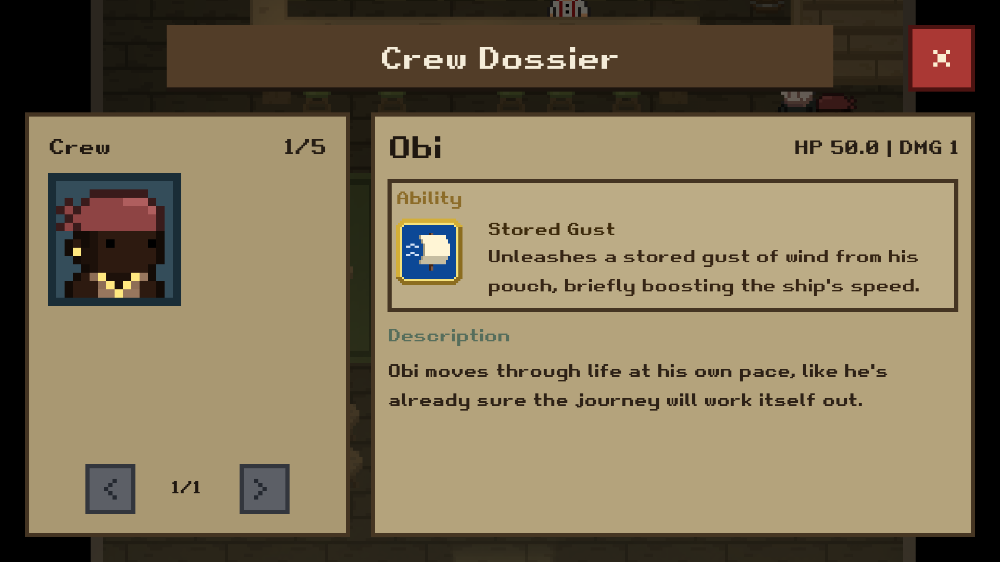
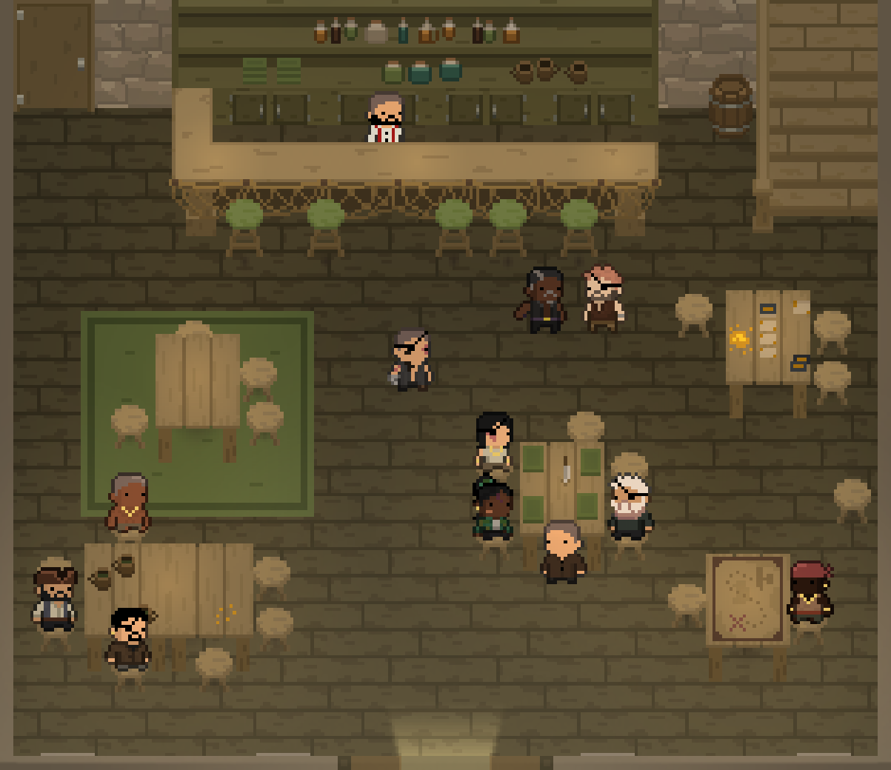
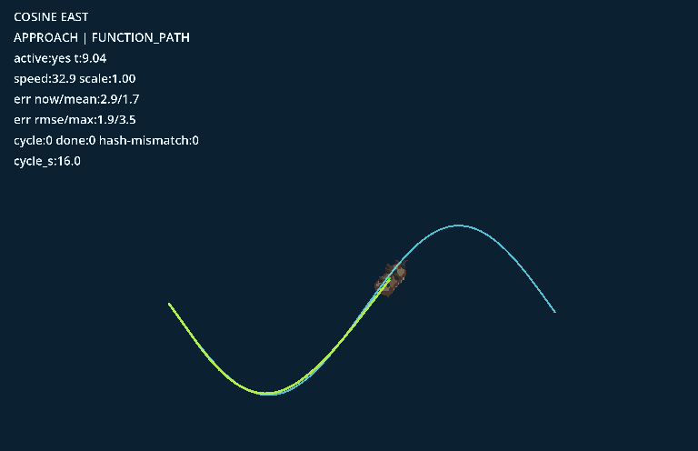

Sealubbers Development Update 1
Ahoy Mateys
I owe you an apology. About six months ago I said the Sealubbers demo would release by the end of 2025. That obviously didn't happen. On top of that, I've been pretty quiet for the last few months, which only made things worse.
The truth is that development has taken much longer than I expected. This project is far bigger than anything I've worked on before, and I reached a point where my original systems just weren't scaling well, so a lot of the core had to be redesigned and rebuilt. I also spent months stuck on enemy AI, which turned out to be much more complex than anything I'd tackled before. Because of all that, I didn't want to release a demo that felt half-finished or misrepresent what the game is supposed to be.
I also don't want to make another promise I can't keep. Because of that, I'm not announcing a new release date for the demo right now. When I give a date next time, I want to be absolutely sure I can hit it.
What I can say is that the project is still very much alive, and I've been working on it obsessively behind the scenes. Let me show you what I've been working on; I'm very excited about how it's turning out.
Recent Progress
New Islands
I created drafts for two new islands.

Port Abera, a Royal Navy outpost known for its wealth. At its center, the governor is working to outgrow the crown itself, eliminating piracy in the region while exploiting every resource he can to build his own power. Through strict trade control and relentless naval expansion, he is turning the port into a foundation for influence that may soon rival the navy's command. (This is still an early sketch, it will look much nicer)

Blubberig, a Pirate Fleet outpost built around a colossal whale carcass, began as a chaotic scramble between rival crews racing to strip it for oil and bone. No one could claim it, and no one would leave, so the scaffolding became permanent. With no ruler and constant infighting, control shifts between factions, but the value of the whale binds them all to the same fragile stronghold.
Crew and Characters
I added 20 unique crew mates with their own combat abilities and dialogue. I also finished the hiring system. When you recruit someone, they run to your ship, get added to your crew dossier, and appear onboard doing idle activities. They now affect your ship's stats and appear during boarding battles.

The crew dossier now lets you flip through your recruits, view their stats, read their descriptions, and see the unique ship or combat ability each crew mate brings with them.
Taverns and NPCs
The Kelptown Inn has been completely redone and now includes a lighting system. NPCs in taverns now move around, sit at tables, and converse with each other instead of standing still. I'm really happy with how this turned out, it's at the level of polish I'm going for with the game.

The inn has really come to life with the new lighting system and NPC behaviors.
Quests
The quest system is finished. You can receive quests through dialogue or the task board, look at the details in the quest log, and then track a quest on screen. The first quest type is exploration, where you chart your map and get guided toward new islands. I'll be working on bounties next where you hunt down valuable ships.
Menus and UI
Core menus are now in place. This includes the task board, world map, crew dossier, quest log, and settings.
Ship Movement and AI
I built a system where ships follow mathematical functions as paths. This allows them to move in more natural and varied ways. With this system, your ship can autopilot around obstacles when docking and move in a smooth, natural route. Enemy ships can evade, navigate around hazards, and position themselves for broadsides more reliably.

This debug view shows one of the mathematical routes ships can follow, letting them sail along smoother curves and approach targets with more natural movement.
Combat and Loot
Defeated ships now break apart into loot. Gold and items scatter into the water and you sail over to collect them. Boarding combat has also been improved. Your crew fights automatically in a way that looks natural. Then you can move them around and use their special abilities as the captain. There is also a victory screen for these fights too. I'm still working on balancing the difficulty of these battles and adding environmental interactions.
When you sail over floating gold, it now flies up into the HUD so collecting loot feels very satisfying
World Detail and Feel
I added rocks and coral to the ocean to break up empty space. I also adjusted sound and controls based on feedback to improve how the game feels.
Looking Ahead
Once I rebuilt a lot of the core systems, development started moving much faster. It's now much easier to add new features and expand the game without everything breaking. There's still a lot left to do, especially with combat and artwork, but progress is going very steadily.
Sealubbers is a large project for one person, and sometimes that means progress happens slower than I'd like. But I'm very committed to making the game the right way instead of rushing something out that doesn't live up to what it should be.
Going forward I'm going to try to share more frequent updates so you can see what's being worked on, even when things are rough.
Thank you to everyone who's stuck around and continues to support the project. It genuinely means a lot.
More updates soon.
← Back to Captain's Log